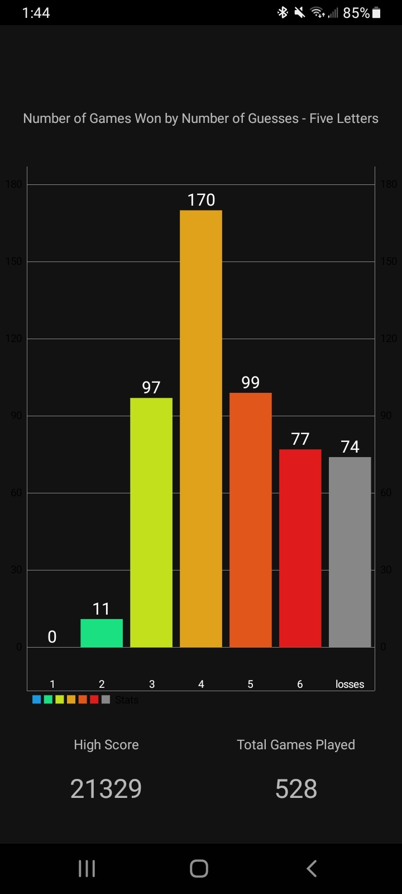

Hi, I'm Jacob Nelson, and this webpage is my first assignment for Graphical User Interface Programming (COMP.4610) at University of Massachusetts Lowell. This webpage functions as a platform to talk about myself, some recent schoolwork I've done, and some other links you can check out as well.
About Me
As senior computer science student, and I enjoy programming and working on software. I will be earning my Bachelor's Degree in December. I am also a musician, I have been playing guitar for over 10 years and have a two-year degree in Music Performance from Middlesex Community College.
I like to think I have a wide variety of interests and hobbies. I enjoy playing video games, gardening, cooking, brewing coffee, recording music, and traveling any opportunity I get. Hopefully, I can get to a place in my life where I have the time and money to indulge in these hobbies more. Someday, I'd like to have a space in my home dedicated to playing and recording music.
There are a lot of things I want to do after I graduate. For instance, I want to learn more about electrical engineering and circuitry, not only to make myself a better computer scientist, but to be able to build gadgets and fun stuff. For instance, I'd like to build my own guitar effect pedals. I'd also like to build a retro gaming console as well, using a Raspberry Pi running game emulators. Oh, I also want to get into nature photography. Particularly birds. I like birds.
See some of my recent schoolwork below.
Graphics
Computer Graphics I (COMP.4270) was a class I took in the Spring semester of 2023. This was a really interesting and challenging class that teaches fundamental concepts of the computer graphics pipeline using a graphics library called WebGL. Below is one of the homework assignments for that course. This purpose of this assignment was to program the camera controls for an object in a scene. You can use the controls below to change the position and movement of the camera. You can change the camera to either rotate along the edge of a sphere facing the sphere's origin, or to travel along a line given the line's endpoints.
To switch between the sphere and the line camera, use the 'Perspective" selection box. When the sphere option is chosen, you can set the origin of the sphere using the X, Y, Z, numeric entries, as well as the radius. When the line option is chosen, you can define the endpoints of the line using the numeric entries that appear. For both options, you can toggle the animation.
Please note that in WebGL, the canvas has a 3D coordinate system ranging from -1 to 1, so setting the camera to a position outside of that range will cause the object or the camera to clip out of view.
Also, just for fun, I made it so the colors of each face of the object are randomized on page load.
Controls
GuessWord
"GuessWord" is the name of the Android app that I developed for Mobile App Programming II (COMP.4631) in the
Spring semester of 2023. The purpose of this course is to come up with an idea for an app that we wish to
create, and then develop and launch it. GuessWord is a game for Android devices that is similar to the New
York Times' Wordle, except with a handful of additional features. For instance, Wordle is a once-a-day game,
where you guess a five-letter word. In GuessWord, there is no limit to the amount of games you can play in a
day, and you can also play games of other word-lengths, instead of only five-letter words. Check out some
more features of GuessWord below.


Unlimited Play
Unlike Wordle, GuessWord can be played unlimited times per day.
Challenges
Complete randomly-generated daily challenges.

Check Your Stats
View stats and score information as you complete games and beat your personal high score.
View Your History
Watch your "History Grid' grow as you complete games.
Overall, I'm quite proud of this app. If I had more time during the semester I was working on it, I would improve the UI with some animations and more customization options. I'm quite satisfied with the fact that I created a game I wanted to play, and now I play it nearly every day.
I have made this game fully open-source, and you can find the source code, as well as the APK (Android installation) file here.
Other Stuff
Thanks for visiting my page. Below are some additional links I'd like to share with you. Be well, drink plenty of water, take care of yourself, and be kind to others.
| Name | Description | Link |
|---|---|---|
| GitHub | This is a link to my personal GitHub page. This is a place I've used to put various school assignments and personal projects. | Visit |
| This is a link to my LinkedIn page. I don't use it very much these days, but I will occasionally. | Visit | |
| YouTube | This is a link to my personal YouTube channel. There isn't much on there, but I like to post strange, absurd art videos sometimes. For instance, when MidJourney and other AI image-generating models were in infancy about a year ago, it was interesting to give it strange prompts and get a weird dreamy result. I have some videos where an AI image is being generated over some simple music I made. As a side note, I must assert that AI art is truly no match for human-made art, and never will be. Support real artists and commission them in your work when you can. | Visit |
| My Friend's Art | My friend Tyler is an incredible artist whose art style is greatly varied, but specializes in dark, macabre, and unsettling themes. Tyler has incredible control over her vision, and works in the aesthetic realms of liminal spaces, New England-style creepiness, dreaminess, and dark magic. Check out her store at the link I have provided. | Visit |